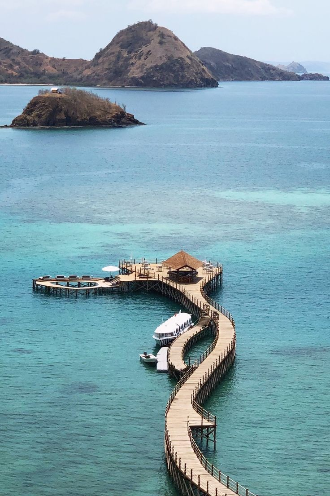
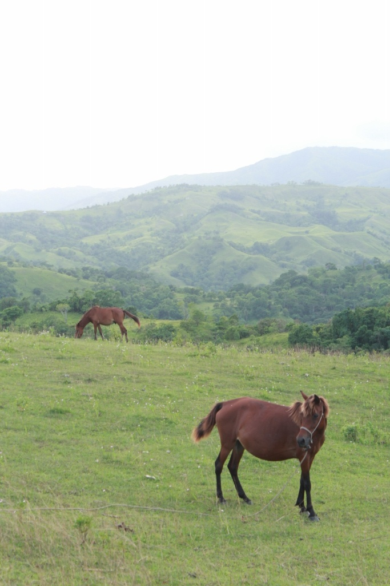

🌅 Galeri Keindahan Indonesia 🌴
Nikmati panorama alam Nusantara dari timur ke barat — mulai dari puncak gunung hingga pantai berpasir merah muda. Semua keajaiban ini adalah bukti betapa luar biasanya Indonesia.

Labuan Bajo – Gerbang ke Pulau Komodo

Wae Rebo – Desa di Atas Awan

Savana Mausui – Padang Rumput Eksotis

Kawah Ijen – Api Biru yang Mistis

Kebun Bunga Hortensia – Lembah Romantis

Tumpak Sewu – Niagara-nya Jawa

Gili Trawangan – Surga Pesta dan Sunset

Mandalika Circuit – Adrenalin Pantai Selatan

Pantai Tangsi – Keajaiban Pasir Merah Muda